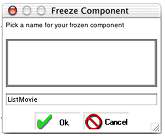

| PATH |

When you have worked with the WebAssistant and customized your pages to your liking, you may still want to add more features to your application. To do so, you can "freeze" a page; that is, save it as a WebObjects component. When you do this, the component becomes part of your project and is no longer created "on the fly" by Direct to Web. This has several advantages:
The main disadvantage of generating components is that you
lose the ability to modify settings with the WebAssistant since
the entity, property settings, and page configuration are stored
directly in the generated component. To modify the page, you must
edit the component or its corresponding .java file.
Therefore, you should try to get your settings as close as possible
to what you want before generating the component.
To generate a component:
You can't select "*all*" to generate multiple components. You must generate the components one at a time.
The Freeze Component window appears. It contains a text field with a default name for your page (the page name followed by the entity name). You can edit the name if you choose.
Direct to Web generates a component
(with extension .wo)
and a corresponding .java file
and adds them to your project. You may have to wait a few moments
for this process to complete. Your settings are automatically saved.
If you decide not to use the frozen component and have Direct to Web build the page "on the fly," select the "Use DirectToWeb or User Template" option.
When you generate a page and click Update, the browser's current page doesn't reflect the changes. To use the new component, you must rebuild the application, relaunch it, and then navigate to a new instance of the page. For example, if the current page is a Movie query page, and you use the WebAssistant to freeze it, you must rebuild the project with the frozen component, then launch the application and navigate to a new instance of Movie query (by clicking Build Query); the new instance uses the frozen component.
The generated component is like any other WebObjects component.
You can edit your component graphically using WebObjects Builder.
You can also examine the HTML and bindings (.wod file)
of the new component in Project Builder.
Direct to Web also generates Java code for your component,
which you can modify appropriate to your needs. Each component implements
an interface that is appropriate to the page: QueryPageInterface,
ListPageInterface, InspectPageInterface, and EditPageInterface.
For example, the QueryMovieRole.java file
in Listing 2-1 implements
the QueryPageInterface. For example, it contains an action method
called queryAction that returns
a component when the Query DB button is clicked. (Note that the
component's submit button is bound to queryAction in QueryMovieRole.wod.)
import com.webobjects.appserver.*;
import com.webobjects.eocontrol.*;
import com.webobjects.directtoweb.*;
import com.webobjects.eoaccess.*;
import java.util.*;
public class QueryMovieRole extends WOComponent implements QueryPageInterface {
protected EODatabaseDataSource _queryDataSource;
protected WODisplayGroup displayGroup;
protected NextPageDelegate _nextPageDelegate;
public WOComponent queryAction() {
_queryDataSource =new EODatabaseDataSource(session().defaultEditingContext(), "MovieRole");
_queryDataSource.setAuxiliaryQualifier(qualifier());
_queryDataSource.fetchSpecification().setIsDeep(true);
_queryDataSource.fetchSpecification().setUsesDistinct(false);
_queryDataSource.fetchSpecification().setRefreshesRefetchedObjects(false);
if (_nextPageDelegate==null) {
ListPageInterface listPage=D2W.factory().listPageForEntityNamed("MovieRole",session());
listPage.setDataSource(_queryDataSource);
listPage.setNextPage(this);
return (WOComponent)listPage;
} else
return _nextPageDelegate.nextPage(this);
}
public EOQualifier qualifier() { return displayGroup.qualifierFromQueryValues(); }
public void setNextPageDelegate(NextPageDelegate delegate) {
_nextPageDelegate=delegate;
}
public EODataSource queryDataSource() { return _queryDataSource; }
public String entity() {
return "MovieRole";
}
public QueryMovieRole(WOContext aContext) {
super(aContext);
}
}
© 2001 Apple Computer, Inc.